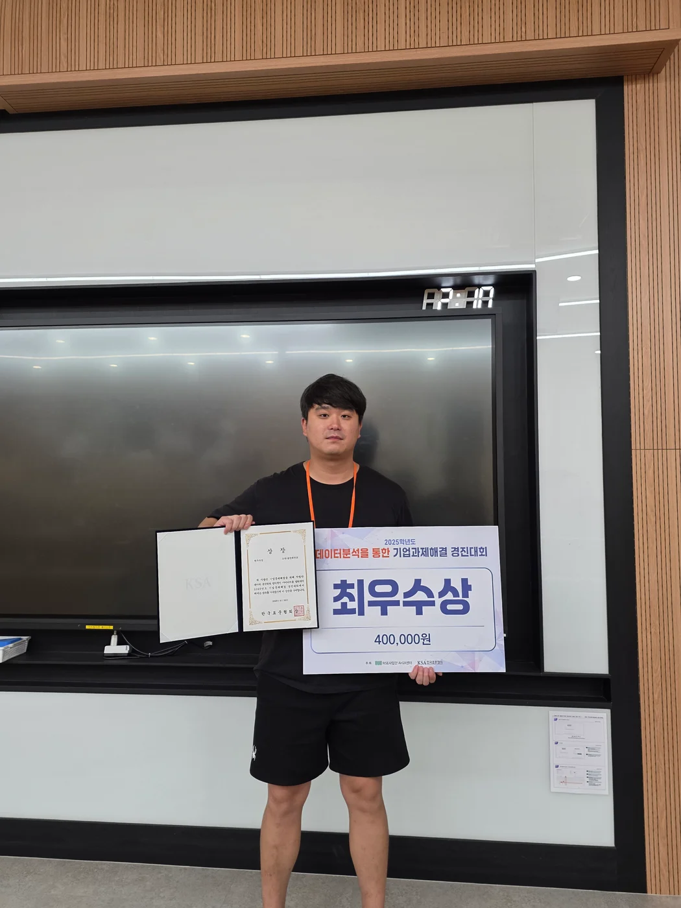

데이터 분석 · 2025.08
숫자에서 찾은 개선의 단서
Minitab으로 고기능성 합금 압연 데이터를 분석하고 최적 조건을 제안했습니다.

01
문제와 분석 범위
고기능성 합금 압연 공정의 부적합품률 감소를 주제로 데이터 분석을 수행했습니다. 과제 정의, 현상 파악, 원인 분석, 개선 조건 도출을 진행했으며, 직접 수행한 범위는 데이터 분석과 개선안 제안까지입니다.
02
데이터에서 원인을 좁혀가기
관리도와 공정능력 보고서로 현상을 살피고, 11개 잠재인자를 회귀분석, 요인배치, t검정과 분산분석으로 검토했습니다. 석출 열처리 전 압하율과 경도의 회귀모형에서는 R² 99.1%를 확인했습니다.
굽힘 가공성을 반응변수로 두고 용체화 열처리 온도와 시간을 반응표면분석으로 검토했습니다. 잔차와 모델 적합성을 확인하며 개선 조건을 도출했습니다.
03
분석 결과
기준 부적합품률 3.22%에 대해 목표 1.50%, 분석상 개선 예상치 1.35%를 제시했습니다. 이는 1.87%p, 약 58%의 감소 가능성에 해당합니다. 실제 생산라인에 적용해 달성한 실적을 의미하지 않습니다.
04
팀을 움직인 방법
팀원들과 개별적으로 이야기하며 강점을 파악한 뒤 분석, 검토, 발표자료 제작, 발표로 역할을 나눴습니다. 분석 결과를 시각화해 비전공 팀원과 의미를 공유하고, 짧은 집중 협업과 공동 피드백으로 마감을 준비했습니다.
다음 이야기